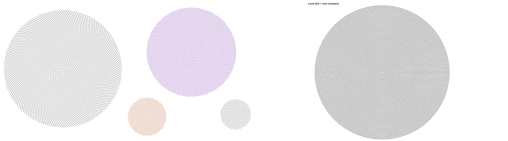
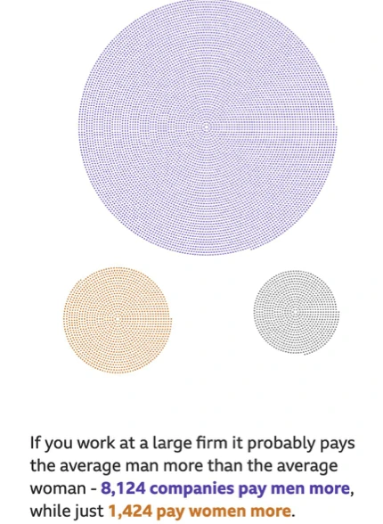

BBC NEWS · DATA STORYTELLING
Falling through the pay gap
How do you show the UK’s gender pay gap one company at a time? I led development of a BBC News story that rearranged more than 10,000 dots as readers scrolled, revealing which companies paid men or women more on average and how large the gaps were.

Getting 10,000 dots to move
Each dot represented a company. Keeping those dots as the chart changed let readers follow the same dataset from a count of companies to a comparison of pay gaps. My first D3 and Canvas prototype slowed down as the dots moved and eventually crashed Chrome. A designer on the team suggested WebGL. I adapted an example built with regl and connected it to the scroll sequence. With the GPU drawing the dots, I could run the transitions and prove we could build the story around them.
The first circular layout I tried arranged the dots in a spiral. The pattern became distracting once the dots moved, so we worked out how to arrange them into a more even circle. For the histogram, I used D3 to calculate the dot positions and regl to draw them. I added an SVG layer for the axes, labels and highlighted points.

Keeping the charts available without JavaScript
The text referred to patterns in the charts, so readers still needed those visuals if the script failed to load or JavaScript was disabled. I included static views at key points in the story, including the breakdown of which companies paid men or women more on average.

Making the story work without animation
Eileen Webb’s writing on motion sensitivity made me think about where the control needed to be. I added a notice and a switch at the start of the article so readers could turn off animation before they encountered any movement. I also made sure they could tab through the content and use the arrow keys to scroll.

If I revisited the story, I’d offer a downloadable CSV so screen-reader users could explore the underlying figures themselves.
Taking the approach into the next story
For How much warmer is your city? , I adapted the scrolling library for the BBC’s project tooling. The team extended the motion toggle to control the globe, chart transitions and illustrations, and used the reader’s reduced-motion preference to set its initial state.